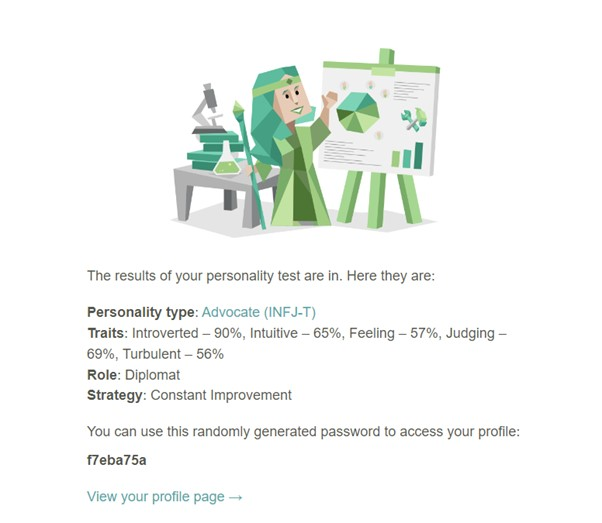
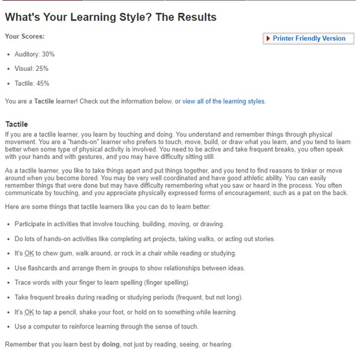
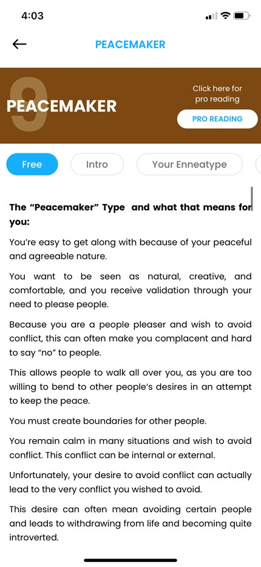

I was sorted into INFJ personality by https://www.16personalities.com/
I was sorted into a Tactile learner group by http://www.educationplanner.org/students/self-assessments/learning-styles-quiz.shtml?event=results&A=6&V=5&T=9
I was sorted into the Peacemaker group through the Enneagram test - https://enneaapp.com/
What do the results of these tests mean for you?
These results show me that I am a very quiet achiever, who builds up the team from the ground. It’s reinforced the notion that I do not want to ‘lead’ a team or be ‘bossy’. Avoiding conflict seems to be high on my list, and making sure the rest of the team is comfortable is a priority. It shows that my shy nature can be a positive for the team and not a hindrance. Being a ‘hands on learner’ is nothing new to me, I have always preferred using my hands, and when showing people how to do things, I’ve seemed to explain it with both hands and ears. Overall, the results show me that I’m ready to help other people grow and achieve things, including myself.
How do you think these results may influence your behaviour in a team?
In a team, I always want the best result, so when it comes to being to it, I like to make sure everyone is on the same page. I might organise crewmates and help if anyone is left out or behind – even if it’s at my own expense (I will have to keep on top of it so it’s still fair on myself). I think I will follow the ‘leader’ and contribute to the cause. I think I might become unsettled if someone doesn’t pull their weight, however I will have the tools and means to speak up, and fix the situation.
How should you take this into account when forming a team?
When forming I team, I must be certain to include everyone equally, even if it makes treating some members according to their needs. I must allow for personal preferences and strengths while I care for myself. I mustn’t be taken advantaged of, and I must be transparent when reviewing workloads.